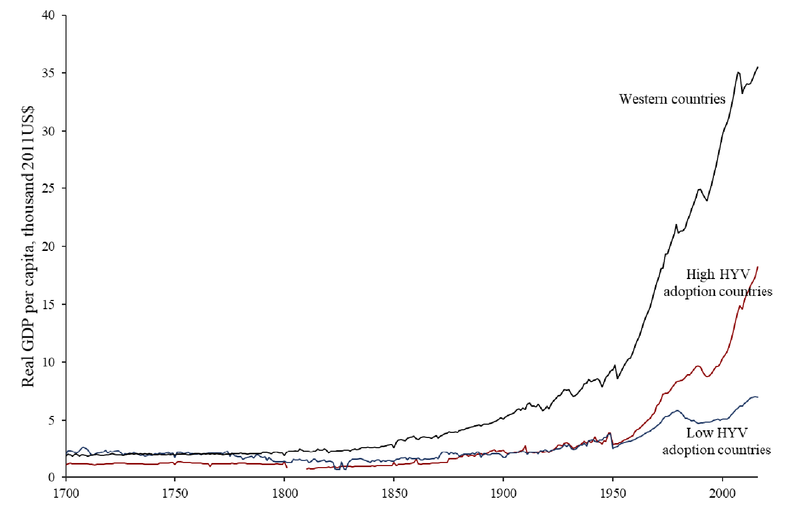
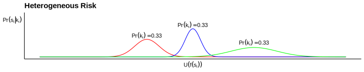
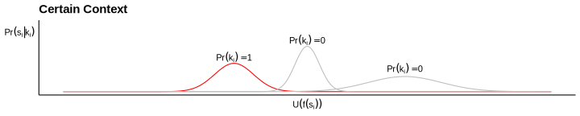
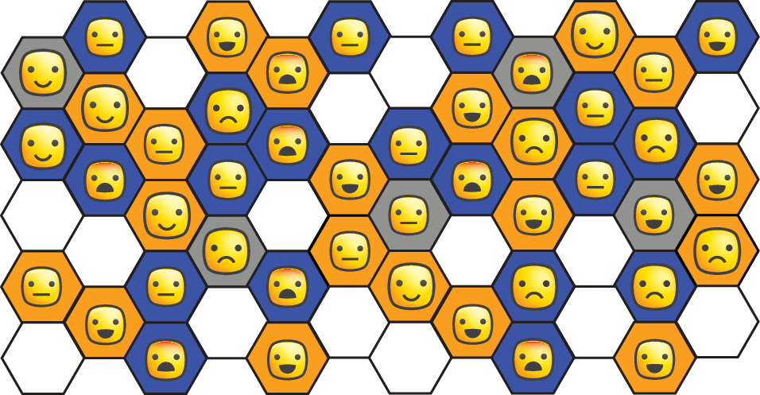
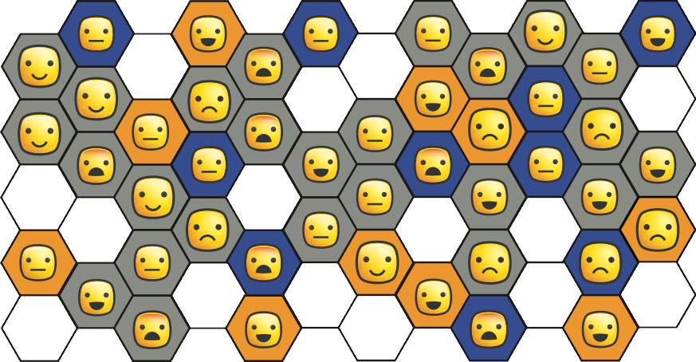

Hossein Alidaee
Northwestern University
Technology is a significant determinant of economic growth (Klenow and Rodriguez-Clare, 1997; Hall and Jones, 1999)
Adoption speed has converged; Penetration hasn’t (Comin and Mestieri, 2018).
Returns to new technologies are unknown (Evenson and Westphal, 1995)
Information on returns is important for adoption (Rogers, 1962; Jensen, 2010)
Where will information come from?
Common taxonomy?
Centralized: NGO, government, or corporation.
Decentralized: peers, bloggers, or learning-by-doing.
Centralized sources have more data.
Yet, we don’t trust them much more than peers. (Krishnan and Patnam, 2013; Qiao, Friedman, Tam, Zeng and Li, 2020)
Why?
Mistrust is amorphous:
Homophily can’t explain all:
Individuals face a trade-off between interval vs external validity!
Today:

Account for large fraction of government spending on agriculture (Akroyd and Smith, 2007)
Centralized testing of technologies
Centralized training of extension agents
Extension agents relay knowledge to farmers
Many papers testing extension design:
Decentralized Learning (Krishnan and Patnam, 2013; Takahashi, Mano, and Otsuka, 2019)
Farmer Field Days (Dar and Emerick, 2021)
Season-long Demonstration Plots (Maertens, Michelson, and Nourani, 2020)
Seed Centrality (Banerjee, Chandrasekhar, Duflo, and Jackson, 2013; Shikuku, 2019)
Opinion Leader Superiority (Feder and Savastano, 2006)
Demonstration Plot Centrality (Dar, Emerick, de Janvry, Kelley, and Sadoulet, 2020)
Direct Contact Farmer Training (Kondylis, Mueller, and Zhu, 2017)
ICT Reduction of Temporal Lag (Cole and Fernando, 2021)
Does sample size drive learning?
Decentralized Learning (Krishnan and Patnam, 2013; Takahashi, Mano, and Otsuka, 2019)
Farmer Field Days (Dar and Emerick, 2021)
Season-long Demonstration Plots (Maertens, Michelson, and Nourani, 2020)
Seed Centrality (Banerjee, Chandrasekhar, Duflo, and Jackson, 2013; Shikuku, 2019)
Opinion Leader Superiority (Feder and Savastano, 2006)
Demonstration Plot Centrality (Dar, Emerick, de Janvry, Kelley, and Sadoulet, 2020)
Direct Contact Farmer Training (Kondylis, Mueller, and Zhu, 2017)
ICT Reduction of Temporal Lag (Cole and Fernando, 2021)
Does centrality drive learning?
Decentralized Learning (Krishnan and Patnam, 2013; Takahashi, Mano, and Otsuka, 2019)
Farmer Field Days (Dar and Emerick, 2021)
Season-long Demonstration Plots (Maertens, Michelson, and Nourani, 2020)
Seed Centrality (Banerjee, Chandrasekhar, Duflo, and Jackson, 2013; Shikuku, 2019)
Opinion Leader Superiority (Feder and Savastano, 2006)
Demonstration Plot Centrality (Dar, Emerick, de Janvry, Kelley, and Sadoulet, 2020)
Direct Contact Farmer Training (Kondylis, Mueller, and Zhu, 2017)
ICT Reduction of Temporal Lag (Cole and Fernando, 2021)
Does social influence drive learning?
Decentralized Learning (Krishnan and Patnam, 2013; Takahashi, Mano, and Otsuka, 2019)
Farmer Field Days (Dar and Emerick, 2021)
Season-long Demonstration Plots (Maertens, Michelson, and Nourani, 2020)
Seed Centrality (Banerjee, Chandrasekhar, Duflo, and Jackson, 2013; Shikuku, 2019)
Opinion Leader Superiority (Feder and Savastano, 2006)
Demonstration Plot Centrality (Dar, Emerick, de Janvry, Kelley, and Sadoulet, 2020)
Direct Contact Farmer Training (Kondylis, Mueller, and Zhu, 2017)
ICT Reduction of Temporal Lag (Cole and Fernando, 2021)
Does homophily drive learning?
Decentralized Learning (Krishnan and Patnam, 2013; Takahashi, Mano, and Otsuka, 2019)
Farmer Field Days (Dar and Emerick, 2021)
Season-long Demonstration Plots (Maertens, Michelson, and Nourani, 2020)
Seed Centrality (Banerjee, Chandrasekhar, Duflo, and Jackson, 2013; Shikuku, 2019)
Opinion Leader Superiority (Feder and Savastano, 2006)
Demonstration Plot Centrality (Dar, Emerick, de Janvry, Kelley, and Sadoulet, 2020)
Direct Contact Farmer Training (Kondylis, Mueller, and Zhu, 2017)
ICT Reduction of Temporal Lag (Cole and Fernando, 2021)
Does knowledge about context drive learning?
Decentralized Learning (Krishnan and Patnam, 2013; Takahashi, Mano, and Otsuka, 2019)
Farmer Field Days (Dar and Emerick, 2021)
Season-long Demonstration Plots (Maertens, Michelson, and Nourani, 2020)
Seed Centrality (Banerjee, Chandrasekhar, Duflo, and Jackson, 2013; Shikuku, 2019)
Opinion Leader Superiority (Feder and Savastano, 2006)
Demonstration Plot Centrality (Dar, Emerick, de Janvry, Kelley, and Sadoulet, 2020)
Direct Contact Farmer Training (Kondylis, Mueller, and Zhu, 2017)
ICT Reduction of Temporal Lag (Cole and Fernando, 2021)
Returns are often heterogeneous:
Education - comparative advantage (Heckman and Li, 2004), gender (Dougherty, 2005)
Microfinance - credit constraints (Banerjee et al, 2020), business experience (Meager, 2019)
Skills training - baseline profits (Lopez-Pena, 2020)
Health - age (Dupas, 2009)
For some signals, we know the context:
Other times, we don’t:


A risk averse agent is estimating \[\theta_i = \underbrace{\theta \vphantom{\gamma_i} }_{\text{average return}} + \underbrace{\gamma_i}_{\text{context adjustment}}.\]
They can choose among many signals \(s_j = \widehat{\theta}_j = \widehat{\operatorname{E}}\left[\theta + \gamma_j\right]\).
Minimizing MSE forces a bias-variance trade-off:
\[\begin{aligned} \operatorname{E}\left[(\theta_i - \widehat{\operatorname{E}}[\theta_i | s_j, \gamma_i])^2\right] &= \operatorname{E}\left[\left(\theta_i - \left(\widehat{\theta}_j - \operatorname{E}[\gamma_j] + \gamma_i\right) ]\right)^2\right] \\ &= \underbrace{\left(\operatorname{E}[\widehat{\gamma}_j] - \gamma_j\right)^2 \vphantom{\left[s\left(sdE[\gamma_j]\right)^2\right]^2} }_{\text{Context Bias}} + \underbrace{\operatorname{E}\left[\left(\operatorname{E}[\widehat{\gamma}_j] - \widehat{\gamma}_j\right)^2\right]}_{\text{Context Variance}} + \underbrace{\hphantom{abc}\sigma^2_j \hphantom{abc}\vphantom{\left[s\left(sdE[\gamma_j]\right)^2\right]^2}}_{\text{Est. Variance}} \end{aligned}\]A farmer is:
The unknown gain from the high yield seed is heterogeneous: \[\theta_i = \underbrace{\theta \vphantom{\gamma_i} }_{\text{average return}} + \underbrace{\gamma_i}_{\text{context adjustment}}\]
Why is context \(\gamma_j\) heterogeneous?:
Each individual \(j\) has their own \(\gamma_j \sim \mathcal{N}\left(0, (\sigma_j^\gamma)^2\right).\)
\(\gamma_j\) is individual \(j\)’s context.
\(\sigma_j^\gamma\) is the context uncertainty.
| Extension Agent | Friends | |
|---|---|---|
| Uninformative Prior? | True | True |
| # of Signals | \(M\) | 1 each (\(N\) friends) |
| Signal Structure | \(\mathbf{s}_E = \theta_E + \boldsymbol{\epsilon}_M\) | \(s_j = \theta_j + \epsilon_j \forall j\) |
| Signal Noise | \(\epsilon_m \sim \mathcal{N}(0, \sigma_E^2)\) iid | \(\epsilon_j \sim \mathcal{N}(0, \sigma_j^2)\) |
| Info Sharing | \(\operatorname{E}[\mathbf{s}_E]\) | \(\mathbf{s}_j\), \(\gamma_j\) |
| Common Knowledge | Prior, \(\sigma_E\), \(\sigma_E^\gamma\) | Prior, \(\sigma_j\), \(\sigma_E^\gamma\) |
Imagine friend \(j\) shares signal \(s_j = \theta + \gamma_j + \epsilon_j\).
Without \(\gamma_j\), this is a signal about \(\theta_j = \theta + \gamma_j\).
How does sharing context \(\gamma_j\) impact learning?
Consider estimating \(\theta_i\) with context uncertainty:
\[\begin{align} \operatorname{E}[\theta_i | s_j, \sigma_j, \sigma_j^\gamma, \gamma_i] &= \operatorname{E}[s_j - \epsilon_j - \gamma_j + \gamma_i | s_j, \sigma_j, \sigma_j^\gamma, \gamma_i] \\ &= s_j + \gamma_i - \operatorname{E}[ \epsilon_j + \gamma_j | s_j, \sigma_j, \sigma_j^\gamma, \gamma_i] \\ \end{align}\]Knowing \(\gamma_j\) allows perfect adjustment:
Because the farmer is risk averse,
\[\operatorname{E}[U(\theta_i)] \leq U(\operatorname{E}[\theta_i]).\] Thus, all else equal, he prefers taking \(\gamma_j\) out of the expectation:
\[\begin{align} \operatorname{E}[U(s_j + \gamma_i - \epsilon_j + \gamma_j)] &\leq U\left(\operatorname{E}[s_j + \gamma_i - \epsilon_j + \gamma_j]\right) \\ &\leq U\left(s_j + (\gamma_i -\gamma_j) - \operatorname{E}[\epsilon_j ]\right) \end{align}\]But what if knowing \(\gamma_j\) requires adding noise?
If \(U(s_j)\) is maximized by minimizing MSE, then
\[\begin{aligned} U(s_j) &= \operatorname{E}\left[(\theta_i - \widehat{\operatorname{E}}[\theta_i | s_j, \gamma_i])^2\right] \\ &= \underbrace{\left(\operatorname{E}[\widehat{\gamma}_j] - \gamma_j\right)^2 \vphantom{\left[s\left(sdE[\gamma_j]\right)^2\right]^2} }_{\text{Context Bias}} + \underbrace{\operatorname{E}\left[\left(\operatorname{E}[\widehat{\gamma}_j] - \widehat{\gamma}_j\right)^2\right]}_{\text{Context Variance}} + \underbrace{\hphantom{abc}\sigma^2_j \hphantom{abc}\vphantom{\left[s\left(sdE[\gamma_j]\right)^2\right]^2}}_{\text{Est. Variance}} \end{aligned}\]Adoption will be maximized by the source minimizing total uncertainty
\[\begin{align} \left(\frac{M}{\sigma^2_E + (\sigma_E^\gamma)^2}\right)^{-1} &\text{ vs } \left( \sum_j \frac{1}{\sigma_j^2 + (\sigma_j^\gamma)^2 }\right)^{-1} \end{align}\]The value of an additional observation by the sender of the signal (i.e. observing \(M + 1\) instead of \(M\) farms) is increasing in context precision \(\left(1/\sigma_i^\gamma\right)^2\).
We have many field experiments!
Decentralized Learning (Krishnan and Patnam, 2013; Takahashi, Mano, and Otsuka, 2019)
Farmer Field Days (Dar and Emerick, 2021)
Season-long Demonstration Plots (Maertens, Michelson, and Nourani, 2020)
Seed Centrality (Banerjee, Chandrasekhar, Duflo, and Jackson, 2013; Shikuku, 2019)
Opinion Leader Superiority (Feder and Savastano, 2006)
Demonstration Plot Centrality (Dar, Emerick, de Janvry, Kelley, and Sadoulet, 2020)
Direct Contact Farmer Training (Kondylis, Mueller, and Zhu, 2017)
ICT Reduction of Temporal Lag (Cole and Fernando, 2021)
Each design has a number of confounders:
None can precisely identify a mechanism.
What’s the path to scale?
Background: Technology, Village
Outcome: Adoption intensity (0-10)
Data: Each NPC has two features:

Your Info:
Users have the choice of two views:
Within Variation:
Across Variation:
Constant:

Game Controls:
Demographic Controls:
The value of an additional observation by the sender of the signal (i.e. observing \(M + 1\) instead of \(M\) farms) is increasing in context precision \(\left(1/\sigma_i^\gamma\right)^2\).
Additional modules for:
Using the diff-in-diff design, we can structurally estimate risk aversion.
Assume CARA utility: \(u(\theta_i) = 1 - e^{-a\theta_i}\)
Klibanoff et al. (2005) allows testing \[a_C \lesseqqgtr a_S\]
You’re deciding whether to enroll your daughter in school for an extra year. I expose you to one of three main treatment arms:
Potential lessons: